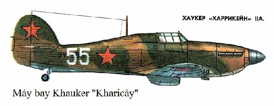

Chúng tôi đi ngang qua Bacu, Đerbent, rời khỏi Grôznưi... Trên các nhà ga là những đoàn quân, trên sân ga là những khẩu pháo phòng không và súng máy với những người lính cao xạ. Chiến tranh đã dạy cho cách phải biết chống chọi lại những trận công kích bằng đường không. Mới 3 tháng trước đây thôi, các đoàn tàu chạy không cần đến sự bảo vệ, còn bây giờ thì các máy bay tiêm kích phải tuần tiễu trên các tuyến đường sât.
Chúng tôi đến Matxcơva vào buổi chiều. Tuyết rơi kéo theo cái lạnh của tháng Giêng. Thủ đô lúc trời mờ tối trở nên yên lặng, cảnh giác, nhưng các nhà máy vẫn làm việc, thành phố vẫn chu cấp cho mặt trận.
Chúng tôi đi tàu điện đến Nheglinaia. Mọi người đều im lặng, đăm chiêu. Họ nhìn chúng tôi với thái độ rất tôn trọng những người bảo vệ Matxcơva. Chúng tôi cố tìm cách thoát khỏi tình trạng lúng túng. A, bến đỗ ở gần nhà Philatôp đây rồi. Chúng tôi lên tầng bốn, bước vào phòng. Ngay từ những lời đầu tiên, tôi đã thấu hiểu nỗi đau không thể hàn gắn nổi. Anh trai của Xênhia cùng trung đoàn đi chiến đấu bảo vệ Matxcơva đã hy sinh trong trận chiến chống phát xít. Vợ của anh, - Avđôchia Pêtrôpna, - mẹ của hai đứa con nhỏ phải sống trong nỗi đau khôn cùng.
- Cậu Ivan đâu? - Xênhia hỏi thằng cháu trai.
- Trong nhà máy. Cậu thế chân vào chỗ của bố. Cũng đã tìm mọi cách để ra mặt trận, đến cả phòng quân vụ rồi đấy... Họ không tiếp nhận, nói rằng còn trẻ và còn thấp bé quá.
Vừa nói chuyện chúng tôi vừa liếc nhìn chiếc bếp dầu - đấy là nguồn sưởi ấm duy nhất. Trong phòng, nhiệt độ lạnh dưới 0 độ. Cái lạnh làm cho bà của Xênhia run rẩy ghê gớm. Bà đã ngoài 80 tuổi rồi. Bà từng sống qua nhiều thời đại, nhớ rất rõ cuộc chiến tranh Nga - Nhật.
- Các cậu thế nào, cũng kéo nhau ra mặt trận chứ? - Bà hỏi và không đợi chúng tôi trả lời, làm dấu thánh và cất giọng ngân nga: - cầu Chúa sẽ phù hộ, che chở cho các con, cho các con có thêm sức lực.
Dừng một lát, bà lại tiếp tục:
- Sống theo kiểu hiện đại, tất cả đều có đầy đủ cả, mọi người đều ăn diện, thanh lịch, trăm thứ khổ ải thì trút cả vào nước Nga. Nhưng không sao! Người Nga đâu chỉ vượt qua cái nỗi khổ đau ấy. - Bà dừng lại, nhìn vào phù hiệu không quân, hỏi: - Các cháu bay à?
- Vâng, chúng cháu bay, bà ạ, - Xênhia trả lời.
- Có sợ không, các cháu? Nhưng không sao, bọn Đức còn đáng sợ hơn vì chúng đem đến sự chết chóc muôn thuở. Bà cũng đã từng cùng ông lão nhà này vào năm 1917 bảo vệ chính quyền Xôviết. Còn các cháu, các bạn trẻ ạ, đừng sợ hãi - hãy nện bọn phát xít đi. Bà đây, các cháu yêu quý ạ, dù đã già, nhưng vẫn muốn sống cho đến ngày chiến thắng, và dứt khoát sẽ sống đến ngày đó.
Bà cúi đầu, suy nghĩ điều gì. Chúng tôi im lặng. Bất ngờ, các cửa kính rung lên bần bật, kèm theo tiếng nổ loạn xạ.
- Lại bắt đầu rồi, lũ cún con chúng lại bắn đấy!- Bà điềm tĩnh nhận xét.
Chúng tôi không chạy ra hầm tránh bom mà ở lại trong phòng cùng ngồi nói chuyện tâm tình.
Uống trà xong, chúng tôi để nguyên xi quần áo, giày ủng, nằm xuống ngủ.
Gần đến nửa đêm thì Ivan từ nhà máy trở về. Trong bộ quần áo xanh công nhân với mũ lưỡi trai đội đầu, trông cậu dáng người lớn lắm. Bằng sự hào hứng, nhiệt tình của tuổi trẻ, cậu kể cho chúng tôi nghe những thành tích mình đã đạt được. Cậu kể rằng ca làm việc của cậu đã sản xuất rất nhiều súng máy. Theo lời cậu kể thì nhiều đoàn viên thanh niên Cômxômôn của nhà máy đã đứng máy đến 3 ca liền.
Chú và cháu sôi nổi, tâm tình như hai người bạn thân chuyện trò với nhau gần như đến tận sáng.
Hai ngày liền chúng tôi ở ngoài ga bận bịu về chuyện mua vé, sau đó chúng tôi đi đến Ivanôvô, về với trung đoàn dự bị.
Chính ủy phái tôi ra sân bay gặp chủ nhiệm kỹ thuật để làm quen với máy bay.
Phấn khởi, tôi chạy ra sân đỗ. Tôi tìm được chủ nhiệm kỹ thuật đang ở gần máy bay đã tháo bạt che. Vẻ ngoài khắc khổ, khắt khe của đồng chí nói lên rằng đây là con người từng gánh chịu rất nhiều sự thiếu thốn và khổ cực. Nhưng tôi lại nhận thấy ở đồng chí có nét gì đó rất quen thuộc. Khi tôi trình lệnh của chính ủy, tôi thấy đồng chí bỗng dưng mỉm cười. "Gì thế nhỉ? Chẳng lẽ tôi có cái gì đáng cười ư?" - Tôi băn khoăn. Nhưng chủ nhiệm kỹ thuật đã lên tiếng.
- Tôlia (tên gọi thân mật của tôi), gọi thế không có vấn đề gì chứ, - đồng chí ấy đùa.
Khoan đã nào! Đây chính là Guđim Lepcôvich rồi - con người gầy gò từng học với tôi hệ 7 năm ở nhà máy số 22 rồi. Bây giờ đã trở thành con người lực lưỡng, vai rộng như lực sĩ! Chẳng lẽ lại không nhận ra sao.
Cả hai chúng tôi đều học vào loại khá, nhưng Guđim say mê kỹ thuật hơn, suốt ngày hý hoáy chế tạo, lắp ráp cái gì đó.
Tôi nhớ ra rồi:
- Đồng chí chủ nhiệm, sẽ nhận nhau như người thân chứ?
- Tôi sẽ! - Đồng chí khẳng định.
Cuộc gặp gỡ mới hoan hỷ làm sao, chúng tôi tranh nhau hồi tường về trường cũ, về bạn hữu, về vùng Krasnoyarsk thân yêu...
Mọi chuyện chuẩn bị cần gấp gáp. Guđim tự nguyện nhận hướng dẫn tôi cách cấu tạo và những đặc điểm của máy bay và động cơ. Đồng chí biết cách giảng giải những vấn đề cốt yếu mỗi phi công cần hiểu sâu sắc về máy bay của mình. Tôi chăm chú lắng nghe, cố gắng ghi nhớ những lời khuyên và chỉ dẫn của đồng chí. Giờ học của chúng tôi gần kết thúc thì chính ủy và trung đoàn trưởng đến. Guđim báo cáo việc thực hiện mệnh lệnh, còn tôi thì báo cáo về việc chuẩn bị cho chuyến bay đơn.
- Chuẩn bị xong thì tiến hành kiểm tra, - trung đoàn trưởng nói, - khoác dù vào và cất cánh. Nhiệm vụ của đồng chí - tiến hành bay 3 chuyến theo hàng tuyến.
Phút chốc, tôi đã ngồi trong buồng lái của chiếc "Kharicây". Tôi mở máy và xin phép lăn. Mọi tinh lực, sức lực của tôi đều tập trung cho chuyến bay. Được phép cất cánh. Tôi tăng cửa dầu. Máy bay tăng tốc độ. Tôi từ từ kéo cần lái cho máy bay tách đất. Tôi có nhận xét rằng, "Kharicây" là loại máy bay ổn định, tuy điều khiển nặng, nhưng có tính năng cơ động.
Tôi lập hàng tuyến thật chuẩn mực và tiến vào hạ cánh. Tiếp đất trên đúng 3 bánh, đúng điểm "T", nhẹ nhàng và sau đó chạy lăn trên cánh đồng bằng phẳng.
Không hề có nhận xét gì, trung đoàn trưởng cho phép tôi bay tiếp hai chuyến nữa. Hai chuyến sau, tôi thực hiện với chất lượng không kém chuyến đầu tý nào.
Kế hoạch sáng ngày hôm sau của tôi là sẽ bay hai chuyến vào không vực và một chuyến "không chiến" với trung đoàn trưởng.
Suốt buổi chiều, tôi suy nghĩ về cuộc "không chiến" tới. Tôi biết rằng cuộc bay này thực hiện trên cùng loại máy bay. vì vậy, phải nắm thật vững tính năng kỹ chiến thuật của nó, phải thành thạo kỹ năng nhào lộn và nhạy cảm. Người chiến thắng phải là người phản ứng thật nhanh dù chỉ 1/10 giây trước kẻ thù. Tôi hiểu rằng phẩm chất quý giá ấy không một sớm một chiều mà có được, nó phải tích lũy qua năm tháng, trong những chuyến bay tập, huấn luyện hàng ngày mới hình thành.
Sau khi nghiên cứu kỹ càng mọi chuyện và đánh giá hết tính năng cơ động của máy bay, tôi quyết định sẽ tham chiến với vòng mặt bằng.
Đã đến lúc phải cất cánh. Tôi nhận lệnh, ngồi vào buồng lái và cất cánh biên đội cùng với trung đoàn trưởng.
Trận "không chiến" được tiến hành ngay trên đỉnh sân bay. Sau khi nhận được tín hiệu, tôi tách biên đội, rồi vòng hướng ngược lại, thực hiện công kích đối đầu. Một loạt các động tác nhào lộn các kiểu đã diễn ra. Và rồi chiếc "Kharicây" đã "đưa máy bay địch" vào trong kính ngắm. Tôi bám chặt sau đuôi máy bay của trung đoàn trưởng, giữ máy bay của đồng chí ấy trong kính ngắm mặc cho đồng chí nhào lộn bất kể kiểu gì. Cuối cùng, có tín hiệu "tập hợp đội hình". "Máy bay địch" đã đầu hàng. Chiến thắng rồi!
- Đồng chí kéo tốt lắm, - chỉ huy khen sau khi hạ cánh. - Chuyến bay sau sẽ bắn bia trên không. Đấy cũng là chuyến sát hạch: không còn thời gian tập luyện nữa đâu. Ngày kia chúng ta sẽ lên đường.
Máy bay kéo bia lăn ra tuyến xuất phát và 15 phút sau đã thả tấm bia hình chóp nón ở trên trời. Đứng trên sân đỗ, tôi tự nhủ: "Không được bắn trượt, cả trung đoàn đang đứng ở phía dưới quan sát các động tác của mình đấy".
Tôi cất cánh, không rời mắt khỏi tấm bia hình chóp nón, kéo lên lấy độ cao, tiến hành công kích lần đầu tiên. Ngắm bắn. Một loạt đạn ngắn. Tiếp tục công kích lần nữa, một loạt đạn nữa, tiếp một loạt nữa. Cuối cùng, các họng súng im bặt vì đã hết đạn. Tôi tin tưởng là tôi không bắn trượt.
Máy bay kéo mục tiêu hạ cánh đầu tiên. Sau khi lăn máy bay vào sân đỗ, tháo khoá dù, tôi chạy bổ đến tấm bia hình chóp nón. Tôi nhận thấy: số lượng đạn găm vào tấm bia nhiều hơn tiêu chuẩn "giỏi"! Chính ủy bắt chặt tay tôi:
- Đấy, phải bắn máy bay địch như thế, - đồng chí hồ hởi nói.
Tôi được bổ nhiệm chức vụ trung đội trưởng trung đội bay, mặc dù trung đội chưa được thành lập. Biên chế các trung đội và phi đội chỉ được phê duyệt trước khi xuất kích có một ngày. Thời gian trước đó, tất cả còn phải tập trung cho việc huấn luyện. Bây giờ, những trận chiến ác liệt đang xảy ra ở vùng sông Von-ga, kẻ địch đã vượt được lên phía trước. Chúng tôi nhận lệnh hạn trong một ngày mọi việc chuẩn bị chiến đấu phải hoàn tất.
Vậy là trung đội được thành lập. Trung đội tôi gồm các phi công trẻ: Xasa Zaborôpxki, Côlia Prôxtôp và Côlia Cuzơmin, gọi tắt là Cuzia. Cậu ta mới vừa tròn 18 tuổi, trông giống hệt đứa trẻ con, thật khó mà tưởng tượng được Cuzia lại là phi công tiêm kích. Số còn lại trong trung đội đều 20 tuổi. Phi đội trưởng tạm thời bổ nhiệm Lavinxki - đấy là người lớn tuổi hơn chúng tôi và có quân hàm cao hơn.
Sau khi toàn trung đoàn có một chuyến bay tập với đội hình các phi đội, chúng tôi nhận lệnh ra mặt trận. Lần hạ cánh đầu tiên - ở sân bay vùng Razan. Vì trời đã tối nên chúng tôi ngủ qua đêm ở đấy. Tôi không bao giờ quên được cái đêm đặc biệt ấy. Tôi chưa kịp ngủ. Lavinxki cùng với một người vừa mới làm quen cùng đến chỗ tôi, ngồi xuống giường và cúi xuống thầm thì kể những chuyện hãi hùng ngoài mặt trận: nào là bọn phát xít tiêu diệt loại "Kharicây" thế nào, rồi phi công chúng ta hy sinh ra làm sao. Giọng nghèn nghẹn của người ấy làm tôi cảnh giác. Lavinxki thì thào:
- Anatôli ạ, tôi biết anh chiến đấu không tồi. Chúng ta hãy quan tâm đến nhau nhé. Rồi anh ta phẩy tay về phía các phi công trẻ: - số này trước sau gì rồi cũng rơi rụng hết thôi.
Người phi công kỳ cựu đề nghị với tôi như thế đấy! Tôi bối rối vì bất ngờ. Tôi không thể tin được rằng, giữa chúng tôi lại có kẻ hèn nhát đến thế. Tôi trấn tĩnh và trả lời dứt khoát:
- Anh coi tôi là loại người thế nào? Có nghĩa là chúng ta chỉ lo cho mạng sống của riêng mình, còn mặc kệ người khác chết chứ gì?
Thời điểm ấy, Lavinxki đã đối địch với tôi, tôi đã chuẩn bị nện cho anh ta một trận. Tôi thấy bộ mặt của anh ta không có gì là thiện cảm, mà đầy phản trắc. Tôi không muốn làm ầm ĩ, chỉ đe rằng:
- Lời đề nghị của anh, tôi sẽ không nói với ai. Nhưng nhớ rằng, tôi đã đi guốc trong bụng anh rồi. Phải biết một điều, bất kể một hành động nhỏ nào của anh muốn thoát thân ra khỏi cuộc chiến, tôi sẽ bắn anh ngay!
Lavinxki định thanh minh, nhưng tôi không thèm nghe. Tôi kéo chăn trùm kín đầu và quay mặt vào tường. Không tài nào ngủ nổi. Trước mắt tôi hiện lên tất cả những khuôn mặt rạng rỡ của các phi công ngày mai có thể cùng tham chiến. Còn anh ta? - Thật là một tên hèn nhát đáng khinh. Cũng may là nó còn bộc lộ đúng lúc. Tôi biết, không nên đưa anh ta lâm vào thế bất hạnh.
Sáng ra, chúng tôi lại tiếp tục những bài học căng thẳng. Từ sáng sớm đến tối mịt, chúng tôi đều ở cạnh máy bay, tổ chức thay nhau trực chiến, đồng thời tranh thủ tập những chuyến bay với đội hình lớn và tập bắn. Sau một tuần, chúng tôi bay đã rất khá. Các số 2 đã quen với cách yểm hộ cho số 1, còn các số 1 thì dạy họ những điều cơ bản trong không chiến.
Chúng tôi cơ động đến sân bay tiền phương từ sáng sớm. Nhân dân địa phương giúp chúng tôi dựng những ụ để máy bay, rồi hầm cho phi công. Chúng tôi rất vội: lệnh xuất kích có thể đến bất kể lúc nào. Đến trưa thì mọi việc đã hoàn tất. Tôi tập trung các phi công của trung đội vào trong hầm để nghiên cứu khu vực bay của mặt trận Vôrônhes, nơi mà trung đoàn chúng tôi phải tham gia. Tuyến trước của mặt trận cơ bản chạy dọc theo suốt bờ trái của sông Đông, phía bên phải - chỗ ngoặt của sông - là bãi chiến trường nhỏ. Chúng tôi lần lượt phân tích phòng tuyến mặt trận, nghiên cứu trên bản đồ từng địa điểm dân cư một, những con đường và các vật chuẩn quan trọng khác...
- Phải nhanh chóng vào cuộc thôi! - Prôxtôp nói. Đặc điểm của cậu ta là nôn nóng, đấy cũng là bản tính của những người nhiệt tình và dũng cảm trước trận đánh.
- Cứ bình tĩnh, khắc có việc. Chính vì thế mà chúng ta phải bay đến đây, - tôi trả lời cậu ta.
- Anh có cho rằng trung đội chúng ta sẽ được xuất kích đầu tiên không? - Zaborôpxki hỏi.
Các phi công trẻ rất mong muốn được tham gia chiến đấu ngay tắp lự. Tiếng chuông điện thoại vang lên. Trung đoàn trưởng cho gọi Lavinxki. Sau khi anh ấy nói rằng mình không được khoẻ thì tôi được gọi đến Sở chỉ huy.
- Côlia Lavinxki bị ốm, anh sẽ chỉ huy phi đội, - trung đoàn trưởng nói.
- Nghe rõ chỉ huy phi đội, - tôi trả lời.
Trả lời thì cương quyết vậy, nhưng trong lòng thì lo lắm - liệu tôi có chỉ huy được hay không? Bởi vì tôi chưa bao giờ chí huy phi đội ở trên trời cả, vậy mà bây giờ lại được giao ngay nhiệm vụ ấy.
Với trung đội của tôi thì tôi yên tâm rồi. Nó đã được chuẩn bị cẩn thận, nhưng còn hai trung đội kia thì thực sự tôi chưa nắm được. Tôi còn lo hơn nữa khi mình thiếu hẳn kinh nghiệm chỉ huy. Rồi trên loại máy bay "Kharicây" lại không được trang bị máy đối không, có nghĩa là, trên trời không thể ra khẩu lệnh được.
- Suy nghĩ cái gì thế? - Sẽ làm được thôi, đừng sợ. Rồi sẽ đâu vào đấy mà. Ai chẳng bị va vấp lần đầu. - chính ủy Vôncôp động viên. Chừng như đồng chí ấy đọc được ý nghĩ của tôi.
Cùng thời gian ấy, trong sở chỉ huy còn có cả các đồng chí phi đội trưởng khác nữa. Vôncôp sau khi hội ý với trung đoàn trưởng, liền triệu tập tất cả những người được giao nhiệm vụ lại. Khi mọi người đã tập hợp đông đủ, với giọng nhẹ nhàng, đồng chí nói những lời chúc tụng:
- Chúng ta, thưa các đồng chí, ngày hôm nay sẽ thực hiện chuyến xuất kích đầu tiên. Rất nhiều người trong số các đồng chí đây cũng là lần đầu gặp địch, nhưng tôi tin rằng, họ là những người đã từng trải, và với lòng danh dự của mình sẽ hoàn thành nghĩa vụ cao cả của người chiến binh Xô viết. Tiêu diệt kẻ thù không đội trời chung, giải phóng Tổ quốc khỏi ách xâm lược của bọn phát xít - đấy là niềm tin cao cả của Đảng cộng sản và chính quyền Xô viết, - chính ủy phát biểu.
Trung đoàn trưởng giao nhiệm vụ chiến đấu và trình bày tỉ mỉ kế hoạch tiêu diệt các máy bay ném bom của bọn phát xít ở sân bay N.
Nhiệm vụ còn được triển khai bằng những tấm phim và nghiên cứu trên bản đồ tỷ lệ lớn, phân công cụ thể phi đội nào yểm hộ cho máy bay công kích, lực lượng nào chế áp hoả lực phòng không. Sau khi đồng chí trình bày xong, chúng tôi mường tượng được rõ ràng thứ tự tất cả những lần công kích đầu tiên và công kích sau cùng. Phi đội tôi chẳng hạn, phải chế áp hoả lực cao xạ, một phần lực lượng phải oanh kích tiêu diệt các máy bay đỗ ở sân đỗ phía Bắc sân bay.
Tôi nghiên cứu kỹ địa hình sân bay và quyết định dẫn toàn phi đội bay ở độ cao cực thấp tiến vào mục tiêu, công kích từ hướng mặt trời lại.
Các phi công đều chờ đợi trận đánh này từ lâu, tinh thần rất phấn chấn. Trong cuộc chiến, đương nhiên sẽ không thể tránh khỏi tổn thất, nhưng không một ai lại nghĩ rằng lần xuất kích này lại là chuyến bay cuối cùng của mình.
Vang lên khẩu lệnh: "Lên máy bay!". Các phi công vừa chạy ra máy bay vừa đội mũ bay. Thời điểm ấy, trên sân bay cũng xuất hiện những chiếc cường kích. Pháo hiệu từ Đài chỉ huy bay vọt lên. Từng trung đội một nối nhau tách đất. Sau đó chúng tôi bay thẳng hàng, kết thành một khối như có sợi dây vô hình ràng buộc. Cũng chính vì vậy mà phi công tiêm kích ngồi trong buồng lái tuy có một mình nhưng không cảm thấy lẻ loi. Anh ta luôn vững tâm: ở trên trời đã có một gia đình đoàn kết, ở đó một người vì mọi người, và mọi người vì một người.
Các máy bay cường kích bay sát mặt đất, còn chúng tôi, những phi công tiêm kích đi yểm hộ cho họ, kiên quyết không để họ bị công kích từ phía trên.
Trước phòng tuyến, mọi chuyện đều yên ổn. Chẳng mấy chốc, chúng tôi bay vượt qua phòng tuyến mặt trận, không thay đổi hướng bay, đi sâu vào vùng lãnh thổ bị địch chiếm đóng, sau đó chúng tôi lấy hướng vòng đến sân bay địch. Sự cơ động như vậy đảm bào cho chúng tôi giữ được bí mật và bất ngờ xuất hiện trên mục tiêu: những tia nắng mặt trời đã ngụy trang giúp chúng tôi.
Chúng tôi xuất hiện đúng lúc bọn địch đang chuẩn bị cho những chuyến bay ném bom ban đêm. Bọn giặc lái và thợ máy đang ở cả trên sân đỗ. Những họng súng máy của máy bay chúng tôi khạc đạn trùm lên mục tiêu tạo những bừng lửa đỏ, những loạt bom của các máy bay cường kích thả xuống làm bung lên những cột đất đá. Kho nhiên liệu nổ tạo thành một cột nấm đen khổng lồ bốc cao tận chân mây.
Bọn cao xạ địch không kịp bắn một viên đạn nào. Chúng bị chế áp ngay từ đầu cuộc oanh kích, vì vậy, các máy bay tiêm kích cũng lao xuống tấn công. Mải công kích các mục tiêu mặt đất, chúng tôi đã không phát hiện được 8 chiếc "Metxersmit" đang tiến đến gần sân bay.
Trung úy Côđinôp, khi cải máy bay ra khỏi bổ nhào đã nhìn thấy ngay trước mặt mình chiếc máy bay vẽ hình chữ thập ngoặc đen trên thân. Đồng chí ấn cò súng, thằng "Metxersmit" cháy bùng lên, cắm xuống đất. Trung sĩ Olâynhicôp ở trong đội hình đi yểm hộ cũng lao vào bắn cháy một chiếc khác.
Còn lại 6 chiếc "Metxersmit" vẫn tiếp tục lao vào tấn công các máy bay cường kích, nhưng chúng bị phi đội thứ hai của chúng tôi cản lại. Các trung sĩ Khmưlôp và Orlôpxki bắn cháy thêm hai chiếc nữa. Bọn Hítle còn lại chuồn khỏi trận chiến.
Chúng tôi quay trở về sân bay một cách bình yên. Trong niềm hân hoan của thành tích đã đạt được, các phi công đua nhau kể về bọn Hítle bỏ chạy thế nào, rơi ra làm sao, kho nhiên liệu nổ, cháy thế nào. Người anh hùng của trận đấu dĩ nhiên là thuộc về ai có diễm phúc bắn rơi máy bay địch.
Phi công trẻ Orlôpxki, với vóc người tầm thước, vạm vỡ, ít nói, Olâynhicôp với dáng cao gầy thì hân hoan như trong ngày hội. Zaborôpxki thì vui sướng như con trẻ. Cậu ta không biết rõ mình đã tiêu diệt được bao nhiêu tên phát xít, nhưng chắc chắn rằng cậu ta đã bắn trúng khẩu đội cao xạ và thiêu cháy chiếc "Junker" của địch trên sân đỗ. Thành tích ấy đều được mọi phi công xác nhận.
Theo tin của du kích và qua những thước phim trinh sát, chúng tôi được biết chúng tôi đã bắn cháy 4 chiếc trên trời và tiêu diệt 17 máy bay địch trên mặt đất. Bọn địch bị loại khỏi vòng chiến đấu gần 100 tên giặc lái và thợ máy.
Vẫn nghe nói, không ai lên án người chiến thắng, nhưng trung đoàn trưởng lại rất kiệm lời khen kết quả chiến đấu, thay vào đó, đồng chí phân tích lần lượt từng thiếu sót một của chúng tôi. Trước hết, đồng chí nhận xét việc cảnh giới của chúng tôi trong trận đánh là chưa đạt yêu cầu. Điều đó hoàn toàn đúng. Chẳng một ai phát hiện được máy bay địch khi chúng tiếp cận cả. Trung đoàn trưởng kết luận, nhìn chung, chúng tôi đã gặp may. Bọn phát xít rất tự tin khi cất cánh lên đối địch với lớp phi công trẻ chúng tôi, chúng cho rằng với máy bay của chúng có tốc độ lớn, chúng sẽ chia cắt đội hình các "Kharicây". Thực tế hoàn toàn ngược lại.
Từ trận chiến đấu này, tôi tự rút ra cho mình một bài học. Đúng là chúng tôi đã mắc một sai lầm nghiêm trọng thật. Giả dụ bọn địch chỉ còn một khẩu đội cao xạ thôi thì chúng tôi cũng lãnh đủ tổn thất rồi. Có thể cắt nghĩa được rằng, chỉ những người rất thiếu kinh nghiệm mới thoát ly khỏi công kích không có sự yểm hộ, lập hàng tuyến không khép kín và vào công kích thì tuỳ ai nấy làm. Trong chiến đấu, tôi không sao tập hợp được phi đội. Các phi công toàn bay theo đội hình hai chiếc hoặc bay lẻ. Còn sao nữa, cần phải rút ra những bài học từ những sai lầm, khuyết điểm thôi.
Cho đến giờ, trước khi vào trận, chúng tôi đều phải luyện tập các tình huống, các phương án cơ bản của không chiến: tập hợp đội hình nhanh chóng, thay đổi vị trí bay trong đội hình và giữ chặt vị trí của mình trong đội hình.
... Lệnh "Báo thức" đã vang lên trước khi mặt trời mọc
Chúng tôi nhanh chóng mặc quần áo. Sĩ quan tuỳ tùng của phi đội - đồng chí Xukhin thông báo nhiệm vụ và giục chúng tôi khẩn trương. Ai đó vì trời tối nên chỉ tìm thấy có mỗi một chiếc ủng, càu nhàu với người bên cạnh.
Chợt nhớ rằng trung sĩ Cuzơmin chưa được ai đánh thức, tôi nói với Prôxtôp:
- Đánh thức Cuzơmin dậy.
Trung sĩ bao giờ ngủ cũng rất say - giấc ngủ của trẻ mới lớn mà - gọi một lần không bao giờ dậy được ngay.
Prôxtôp dựng cậu ta dậy, bắt đứng lên, nhưng cậu ta mắt vẫn nhắm nghiền, lại đổ vật xuống giường tiếp tục ngủ. Prôxtôp bực mình bế cậu ta đứng lên và lắc. Cuzia chống cự lại, bấy giờ mới tỉnh ngủ. Chúng tôi tập hợp đủ mặt trên thùng xe tải. Trong sở chỉ huy, tham mưu trưởng trung đoàn - đại úy Veđênhep đang nghiêng đầu trên tấm bản đồ, dò tìm những chấm nhỏ như những vùng dân cư. Dưới hầm, bóng tối đã bao trùm. Không để ý đến phái viên của Hồng quân, đồng chí cẩn thận khơi bấc đèn dầu. Qua gương mặt mệt mỏi của đại úy, có thể hiểu được rằng, trong những ngày này đồng chí không hề có phút giây nào nghỉ ngơi.
Chúng tôi chờ đợi tác chiến chuẩn bị bản đồ, trên đó bổ sung toàn bộ những sự thay đổi thực tế của chiến dịch với nhiệm vụ phải yểm hộ lực lượng bộ binh của chúng tôi. Sự thay đổi không lớn. Phòng tuyến phía trước vẫn chạy qua bờ bên trái của sông Đông, còn ở phía bên phải, một số đơn vị của chúng ta vẫn chiếm lĩnh chiến trường. Quân đội của chúng ta hàng ngày vẫn phải giao chiến với bọn phát xít định chọc phòng tuyến ở từng điểm để vượt ra phía sông.
Khi bản đồ chuẩn bị xong, trung đoàn trưởng giao nhiệm vụ chiến đấu cho chúng tôi:
- Trực tiếp yểm hộ các máy bay cường kích trên chặng đường bay đến mục tiêu và khi bay về, - đồng chí nói. Các máy bay cường kích có nhiệm vụ oanh kích vào cụm xe tăng và pháo tự hành của địch đang tập kết ở khu vực phía Tây Corôtôiăc. Nhiệm vụ giao cho phi đội 1. Dẫn đầu phi đội là chủ nhiệm dẫn đường Abaltuxôp. Cất cánh theo tín hiệu pháo hiệu xanh từ đài chỉ huy.
Đại úy Abaltuxôp tập hợp phi đội lại và chỉ thị cho từng tình huống một trong không chiến. Có nhiều khả năng chúng tôi sẽ gặp bọn tiêm kích địch đóng ở sân bay Oxtrôgôgiơxca. Đồng chí nhấn mạnh vào những động tác cơ động phòng thủ. Trong trường hợp nếu xảy ra không chiến, các máy bay phải lập vòng khép kín và kéo dài về phía địa phận của ta. Đồng chí cho rằng, với đội hình chiến đấu như vậy, bọn "Metxersmit" sẽ khó tấn công. Những máy bay bay trước sẽ được lực lượng đi sau tự động bảo vệ, đội hình chiến đấu bay dạng hình ê-lip sẽ cho phép tiếp cận phòng tuyến mặt trận mà không cần phải tập hợp lại.
Chủ nhiệm dẫn đường từng là kiện tướng trong không chiến. Đồng chí đã rất nhiều lần giao chiến với địch và lần nào cũng giành thắng lợi.
Trong trung đoàn, Abaltuxôp có uy tín rất lớn. Đồng chí đã 35 tuổi rồi, là cựu phi công Xôviết, có rất nhiều kinh nghiệm chiến đấu. Không quan tâm đến lĩnh vực tuổi tác, cương vị và sự hiểu biết, Abaltuxôp sống rất quần chúng. Đồng chí đối xử với mọi người như bạn bè, không bao giờ làm bộ làm tịch cả.
Abaltuxôp còn có một đặc điểm nữa mà chúng tôi biết rất rõ. Trong đồng chí hình như có hai con người - người này thì sống dưới mặt đất, còn người kia thì sống ở trên trời. Abaltuxôp "mặt đất" là một con người rất đỗi bình thường, lắm lúc còn lôi thôi nữa. Điếu thuốc lá mà anh ta vấn thì chẳng ai buồn nhìn- nó dài ngoẵng, lại còng quèo. Nhìn anh ta đi - thì không ai đoán được anh ta sẽ đi đâu, đi về hướng nào. Gặp anh lần đầu tiên thì ai cũng có nhận xét - đấy chỉ là một phi công tầm thường mà thôi. Nhưng khi đã ngồi vào trong buồng lái, con người anh biến đổi hoàn toàn. Mọi động tác trở nên chuẩn xác, linh hoạt lạ lùng, không hề có sự ngẫu nhiên, sự sai sót. Mới biết, các phi công giỏi cũng như các nhà văn, các họa sĩ, các nhạc sĩ tài ba đều có những tính cách riêng của mình. Tính cách ấy có ở Abaltuxôp. Lòng dũng cảm, sự tính toán tuyệt diệu không chê vào đâu được - đấy là những gì đồng chí khác biệt khi ở trong chiến trận.
Trong lúc chúng tôi chuẩn bị cho chuyến xuất kích thì trời ửng dần, rồi sáng hẳn. Tín hiệu vào cấp 1 đã được phát ra từ Đài chỉ huy. Chúng tôi ngồi vào buồng lái, chờ tín hiệu cất cánh.
Các máy bay cường kích bay ở độ cao 1500m. Những tia nắng mặt trời chiếu rực rỡ. Tiêm kích chúng tôi bay chung trong đội hình chiến đấu: hai trung đội yểm hộ trực tiếp, một trung đội trong nhóm chế áp.
Tiến gần đến phòng tuyến mặt trận, tôi căng mắt quan sát tìm kẻ địch trên không, nhưng bầu trời vẫn trong xanh như xưa, mặt trời buổi sáng chiếu sáng loà, mặt đất thì hoàn toàn yên tĩnh tựa như chưa bao giờ biết đến chiến tranh.
Bất ngờ, số 1 biên đội bên trái Lavinxki bỗng dưng mất hút về một phía. Gần như cùng lúc, trên đầu tôi xuất hiện biên đội máy bay tiêm kích đầu tù với những đôi cánh sơn màu vàng. Bọn "Maki" đến rồi - thoáng ý nghĩ trong đầu, tôi kéo cần lái cho máy bay lao vào tấn công đối đầu với biên đội thứ hai của địch. Tôi cố gắng ngắm thật chuẩn và ấn cò súng. Trong tích tắc, tôi lật qua trái, lách qua hướng đối đầu, tránh đâm thẳng vào thằng phát xít.
Tôi phát hiện thấy có một đội tấn công chúng tôi từ phía bên phải và từ trên xuống. Tôi lật máy bay sang phải, kéo vòng chiến đấu đưa vào thế đối đầu. Chiếc máy bay với hình thập ngoặc đen vẽ trên thân và trên đuôi đứng lập tức nằm trong kính ngắm của tôi. Tôi nã một loạt đạn. Một loạt nữa. Thêm một loạt nữa..., nhưng vẫn thấy nó tiếp tục bay. Nghe chừng, tôi lấy góc đón nhỏ. Tôi chỉnh lại, nhưng không kịp phát hoả: hai thằng "Maki" lẩn trốn rất nhanh, thoát ra khỏi cuộc chiến.
Số 2 của tôi, trung sĩ Prôxtôp không rời tôi nửa bước. Cậu ta cũng đã bắn, nhưng cũng giống tôi, không có kết quả.
Cuối cùng, súng đã hết nhẵn đạn, nhưng trong đội ngũ phi công tiêm kích có một đạo luật khắt khe bất thành văn: "Nếu như đã hết đạn rồi, anh vẫn không được phép thoát ly khỏi không chiến, hãy tấn công kẻ thù, tiếp tục chiếm vị, làm như sắp bắn chúng đến nơi. Hãy giữ đội hình cùng đồng đội, nếu thấy cần thiết - hãy dùng máy bay mình đâm vào máy bay thù". Thực thi đạo luật ấy, biên đội chúng tôi làm những lần công kích giả cho đến tận lúc kết thúc không chiến.
Sau khi Abaltuxôp bắn rơi một thằng "Maki", bọn phát xít mới bổ nhào xuống để tháo chạy về phía Tây.
Các máy bay cường kích của ta, sau khi hoàn thành nhiệm vụ cũng lấy hướng bay về phía đất mình.
Hộ tống đơn vị bạn vượt khỏi tiền duyên, đến khoảng cách an toàn, không sợ tiêm kích địch quấy nhiễu nữa, chúng tôi mới về hạ cánh.
Lần ấy, phi đội chúng tôi không bị tổn thất. Các máy bay nguyên vẹn cả, trừ mỗi chiếc của Prôxtôp bị mảnh của rôckét đâm thủng cánh mà thôi, vết thủng ấy cũng gây ra những phỏng đoán - vì bọn Đức chưa hề có rôckét. Ít lâu sau, những phỏng đoán ấy đã được làm rõ. Đấy là mảnh đạn của chúng ta vô tình lạc phải.
Theo quy định, Abaltuxôp triệu tập toàn phi đội để giảng bình trận đánh.
- Các bạn chiến đấu thế là tốt, có cố gắng, kiên định, nhưng bắn còn kém lắm, - đồng chí nói. Chuyển vị trí trong đội hình thì như kiểu "chó mửa", không làm sao hiểu được ai ở đâu cả. Chẳng lẽ đấy lại là sự hiệp đồng trong chiến đấu? Tôi đã nói trước lúc xuất kích rồi, rằng khi tiêm kích địch xuất hiện, chúng ta cẩn phải bay thành một vòng khép kín kia mà.
Đồng chí không đánh giá đấy là khuyết điểm nghiêm trọng.
Trong ngày hôm ấy, ở hai lần xuất kích sau, chúng tôi đã lập thành vòng khép kín bay trên đầu các máy bay cường kích kể cả lúc đi và lúc quay về trên đất mình. Với lợi thế về tốc độ lớn gấp hai lần, bọn "Metxersmit" bay cao hơn các máy bay "Kharicây", tự do lựa chọn các mục tiêu cho mình.
Chúng tôi bị ràng buộc trong vòng khép kín, không công kích được, chỉ có tránh công kích thôi thì làm sao tránh khỏi tổn thất. Phi đội tôi - Zaborôpxki bị bắn rơi, tiếp đến là mất Khmưlôp. Olâynhicôp thì nhảy dù trở về an toàn.
Như vậy, trận không chiến trong ngày đã bắt chúng tôi phải nhìn nhận lại chiến thuật phòng thủ cũ. Chúng tôi thức đến khuya để bàn chiến thuật mới. Chúng tôi không tranh cãi, không phê bình nhau. Trong số chúng tôi vẫn có những phi công giữ những quan điểm cũ. Rồi chúng tôi cũng rút ra được kết luận: trong trận không chiến, cần phải sử dụng các cơ động ở mặt phẳng đứng kết hợp với các cơ động ở mặt phẳng ngang. Đấy là kết luận đúng đắn. Kinh nghiệm chiến đấu đã dạy thế.
Cuộc họp chi bộ đã được triệu tập. Một vấn đề được đặt ra để thao luận, đó là "những tổn thất ở trận không chiến ngày mồng 2 tháng 9". Chính ủy Vôncôp đọc báo cáo. Đồng chí chỉ ra những thiếu sót trong chiến thuật và những lỗi thời trong không chiến.
- Nhiệm vụ của chúng ta là phải tiêu diệt kẻ thù, đồng chí nói. - Nhưng nếu chúng ta phòng thủ thì lợi thế trận đấu sẽ ở trong tay kẻ thù. Chúng ta cần phải tấn công, mà muốn như vậy thì phải từ bỏ cái chiến thuật "vòng luẩn quẩn". Cần phải hiểu rằng, chúng ta không phản bác những cơ động mặt bằng, nó vẫn cần được áp dụng như áp dụng với các động tác cơ động ở mặt phẳng đứng, có điều không được phép lặp đi lặp lại một cách khuôn sáo. Nào, chúng ta thử phân tích trận đánh hôm qua xem, trận đầu tiên, chúng ta nhẹ nhàng sử dụng các động tác cơ động ở mặt phẳng đứng, chúng ta đã bắn rơi một chiếc. Ngược lại, trong hai trận sau, khi chúng ta áp dụng chiến thuật lập "hàng tuyến", chúng ta đã để mất hai chàng trai Xôviết, - hai người chiến binh dũng cảm! Tổn thất này đã làm trái tim từng người đau thắt lại...
Đến khi nào chúng ta mới học được cách loại bỏ những gì ngáng trở trên con đường đi đến chiến thắng của chúng ta?
Các đồng chí Đảng viên cộng sản đều đồng ý với cách đặt vấn đề của chính ủy. Điều thực tế đặt ra rằng, có thể giúp được đồng chí mình hay không nếu như không được phép rời khỏi hàng tuyến? Rõ ràng là không. Trường hợp của Zaborôpxki và Khmưlôp là như vậy. Các đồng chí đã tách khỏi đội hình chiến đấu, bay trên những máy bay đã bị thương và chẳng được ai yểm hộ, đành phải hạ cánh bắt buộc. Và trở thành miếng mồi của bọn Hítle.
Chúng ta cần, các phi công nói, phải tấn công kẻ thù trước tiên, chứ không đợi sự tấn công của chúng. Chúng ta càng tấn công chúng bao nhiêu thì chúng ta sẽ càng giành được thắng lợi bấy nhiêu.
Buổi họp kết thúc khá muộn. Các Đảng viên cộng sản đã thẳng thắn trao đổi tất cả những suy nghĩ của mình.
